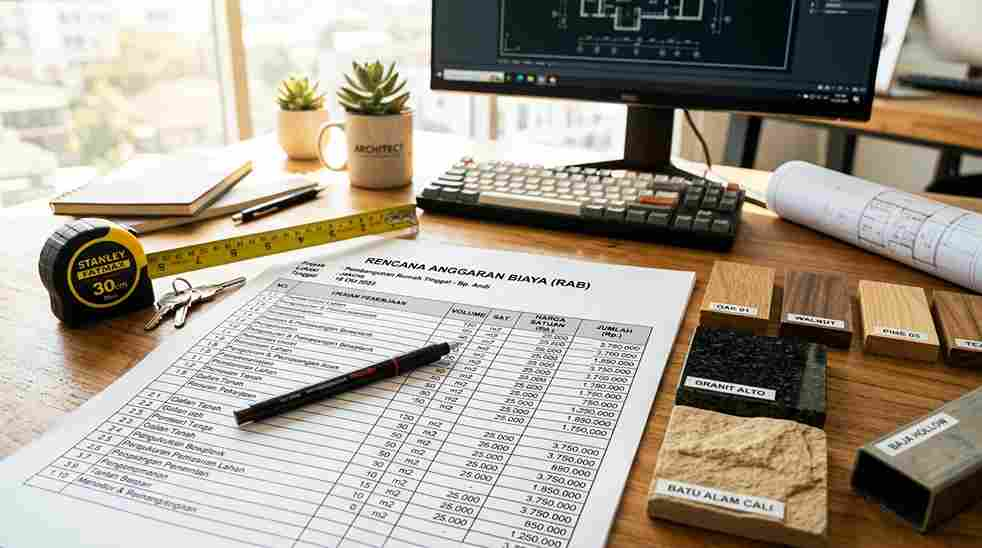

Biaya bangun rumah per m2 tahun 2026 secara umum berkisar antara Rp 3,5 juta hingga Rp 4,5 juta untuk material standar, dan bisa mencapai Rp 6-8 juta per m2 untuk material premium, tergantung lokasi dan spesifikasi.
Angka ini dihitung dari luas bangunan dikali harga satuan per m2, dipengaruhi kelas material, upah tukang, dan lokasi proyek.
Oleh karena itu, RAB yang rinci sangat membantu menghindari pembengkakan biaya di tengah proyek.
Berapa Kisaran Biaya Bangun Rumah per M2 Tahun 2026?
Secara umum, biaya bangun rumah per m2 dibagi menjadi tiga kelas: standar/sederhana, menengah, dan premium, dengan selisih harga signifikan tergantung kualitas material dan finishing.
Kisaran ini bersifat umum dan dapat bervariasi tergantung wilayah, harga material lokal, serta tingkat kesulitan desain.
Rumah dengan banyak bukaan kaca, atap datar, atau bentuk tidak beraturan biasanya membutuhkan biaya lebih tinggi dari rumah kotak sederhana pada kelas material yang sama.
| Kelas Bangunan | Spesifikasi Umum | Estimasi Biaya per M2 (Rp) | Cocok Untuk |
|---|---|---|---|
| Standar/Sederhana | Bata merah, keramik standar, atap genteng metal | 3.500.000 - 4.500.000 | Rumah subsidi, hunian ekonomis |
| Menengah | Bata ringan, granit lokal, plafon gypsum | 4.500.000 - 6.000.000 | Rumah keluarga umum |
| Premium | Material import, smart home, kusen aluminium premium | 6.000.000 - 8.500.000+ | Rumah mewah, custom desain |
Perlu dicatat, harga per m2 di atas umumnya hanya mencakup pekerjaan fisik konstruksi dan belum termasuk biaya perizinan bangunan, yang biasanya dihitung terpisah dalam anggaran total.
Apa Saja Komponen yang Mempengaruhi Biaya Bangun Rumah?
Komponen utama terdiri dari biaya struktur, material finishing, upah tukang, serta biaya tidak terduga yang perlu dialokasikan sejak awal.
Berikut rincian komponen yang wajib masuk dalam perhitungan RAB:
- Pekerjaan struktur: pondasi, kolom, balok, dan atap, biasanya menyerap porsi terbesar dari total biaya.
- Pekerjaan arsitektur: dinding, plafon, lantai, kusen, dan pintu-jendela.
- Mekanikal elektrikal: instalasi listrik, air bersih, dan sanitasi.
- Upah tukang: dapat dihitung harian atau borongan per m2, tergantung kesepakatan dengan jasa kontraktor rumah.
- Biaya tak terduga: umumnya dialokasikan sekitar 5-10 persen dari total anggaran sebagai buffer.
Baca Juga: 15 Desain Rumah Minimalis Modern Tren 2026
Bagaimana Cara Menghitung Total Biaya dari Luas Bangunan?
Cara paling sederhana adalah mengalikan luas bangunan (bukan luas lahan) dengan harga satuan per m2 sesuai kelas material yang dipilih.
Perlu diingat, luas bangunan dihitung dari total luas lantai yang dibangun, termasuk lantai dua jika ada, bukan luas tanah keseluruhan.

Contoh perhitungan sederhana:
- Tentukan luas bangunan, misalnya rumah dua lantai dengan total luas bangunan 120 m2.
- Pilih kelas material, misalnya kelas menengah dengan estimasi Rp 5.000.000 per m2.
- Kalikan luas dengan harga satuan: 120 m2 x Rp 5.000.000 = Rp 600.000.000 sebagai estimasi kasar biaya konstruksi.
- Tambahkan biaya tak terduga sekitar 5-10 persen dari total tersebut sebagai buffer anggaran.
Perhitungan ini masih bersifat estimasi awal. Untuk hasil yang lebih akurat, sebaiknya diminta RAB rinci langsung dari tim jasa kontraktor rumah berdasarkan gambar kerja final.
Jangan hanya mengandalkan perkiraan luas bangunan saja — cara paling akurat memang lewat survei lokasi langsung.
Jika Anda belum memiliki gambar desain, mulailah dari referensi desain rumah minimalis modern agar kebutuhan ruang dan estimasi luas bangunan lebih terukur sebelum masuk ke tahap RAB.
Sistem Pembayaran Mana yang Lebih Hemat: Harian atau Borongan?
Sistem borongan penuh umumnya lebih terkontrol dari sisi anggaran dibanding sistem harian, karena biaya sudah disepakati di awal sesuai spesifikasi.
Sistem harian cocok untuk pekerjaan kecil atau renovasi ringan yang sulit diprediksi volumenya.
Sementara sistem borongan material plus jasa lebih disarankan untuk pembangunan rumah baru skala penuh karena risiko pembengkakan biaya lebih kecil.
Hal ini berlaku selama kontrak kerja dan spesifikasi material dituangkan secara tertulis dan detail.
Kesalahan Umum Saat Menghitung RAB Rumah
Kesalahan yang paling sering terjadi adalah tidak memasukkan biaya tak terduga dan mengabaikan biaya pekerjaan tambahan seperti pagar, carport, atau pekerjaan tanah.
Kesalahan lain yang perlu diwaspadai antara lain hanya membandingkan harga per m2 tanpa memastikan spesifikasi material yang setara.
Selain itu, tidak memperhitungkan biaya perizinan dan pengukuran lahan, serta mengubah desain di tengah pengerjaan tanpa menghitung ulang RAB juga sering terjadi.
Estimasi biaya bangun rumah per m2 adalah titik awal yang berguna untuk merencanakan anggaran, namun angka final tetap perlu dikonfirmasi lewat RAB rinci dan survei lokasi.
Gunakan tabel kisaran biaya di atas sebagai acuan awal, lalu diskusikan spesifikasi lebih lanjut bersama jasa kontraktor rumah terpercaya.
Anda juga bisa mempelajari estimasi RAB pembangunan secara lebih rinci, atau jika kebutuhan Anda adalah renovasi bukan bangun baru, simak panduan jasa renovasi rumah Jakarta terbaik untuk pengerjaan yang lebih tepat sasaran.